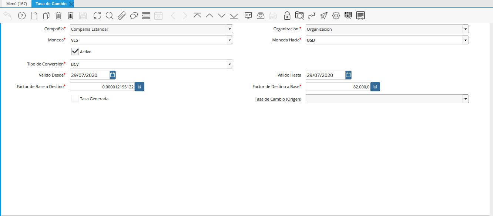

Conversión Manual
La conversión manual consiste en crear en ADempiere los tipos de conversión con los cuales va a trabajar la empresa. Esta funcionalidad permite lo siguiente:
Tasa de Conversión Diaria: Al trabajar con diferentes monedas en los procesos de compra/venta de la organización, se vuelve obligatoría la creación de las tasas de cambio diariamente en los diferentes tipos de conversión con los que trabaja dicha organización. Adicional a ello, la fecha final del rango o periodo de la tasa de cambio, siempre debe ser igual a la fecha de inicio de dicho rango o periodo.
En el caso de que el usuario intente crear una tasa de cambio con el mismo tipo de conversión y moneda utilizado previamente el mismo día, al intentar guardar el registro existirá una validación que no permitirá completar el proceso.
Imagen 1. Ejemplo de Validación

Crear Tasa Recíproca: Esta funcionalidad permite que al guardar el registro sea creada de manera automática una tasa de cambio como reverso.
Note
Un ejemplo de este caso puede ser cuando el usuario crea una tasa de cambio de moneda “VES” a moneda “USD” con una tasa multiplicadora 2 entonces automáticamente se creará una tasa de cambio de moneda “USD” a “VES” con la tasa multiplicadora 0.5

Video 1. Tasa de Cambio
En el siguiente enlace puede descargar un ejemplo del mismo para visualizarlo mejor Convert Video
Tipo de Conversión
Ubique y seleccione en el menú de ADempiere, la carpeta “Análisis de Desempeño”, luego seleccione la carpeta “Reglas Contables”, por último seleccione la ventana “Tipo de Conversión”.
Imagen 2. Menú de ADempiere
Podrá visualizar la ventana “Tipo de Conversión”, con los diferentes registros que contiene dicha ventana.
Imagen 3. Ventana Tipo de Conversión

Seleccione el icono “Registro Nuevo”, ubicado en la barra de herramientas de ADempiere.
Imagen 4. Icono Registro Nuevo de la Ventana Tipo de Conversión
Seleccione en el campo “Organización”, la organización para la cual esta creando el registro de tipo de conversión.
Imagen 5. Campo Organización de la Ventana Tipo de Conversión
Introduzca en el campo “Código”, el código correspondiente al registro de tipo de conversión que se encuentra realizando, para este caso es utilizado el código “BCV”.
Imagen 6. Campo Código de la Ventana Tipo de Conversión
Introduzca en el campo “Nombre” el nombre correspondiente al registro de tipo de conversión que se encuentra realizando, para este caso es utilizado el nombre de conversión “BCV”.
Imagen 7. Campo Nombre de la Ventana Tipo de Conversión
Introduzca en el campo “Descripción”, una breve descripción correspondiente al registro de tipo de conversión que se encuentra realizando.
Imagen 8. Campo Descripción de la Ventana Tipo de Conversión
El checklist “Activo”, indica que el registro se encuentra activo y puede ser utilizado en cualquier transacción que lo requiera.
Imagen 9. Checklist Activo de la Ventana Tipo de Conversión
Seleccione el checklist “Predeterminado”, para indicar como predeterminado el registro que se encuentra realizando.
Imagen 10. Checklist Predeterminado de la Ventana Tipo de Conversión


Note
Recuerde guardar los cambios realizados seleccionando el icono “Guardar Cambios”, ubicado en la barra de herramientas de ADempiere.
Tasa de Conversión desde la Ventana Moneda
Ubique y seleccione en el menú de ADempiere, la carpeta “Análisis de Desempeño”, luego seleccione la carpeta “Reglas Contables”, por último seleccione la ventana “Moneda”.
Imagen 11. Menú de ADempiere

Seleccione el registro de la moneda para la cual requiere registrar una tasa de conversión. Para ejemplificar el registro es utilizada la moneda “USD”.
Imagen 12. Registro de Moneda USD en ADempiere
Seleccione la pestaña “Tasas de Cambio” para navegar entre los diferentes registros de tasas de cambio correspondientes a la moneda “USD”.
Imagen 13. Pestaña Tasas de Cambio de la Ventana Moneda
Seleccione el icono “Registro Nuevo” para crear un nuevo registro de tasas de cambio.
Imagen 14. Icono Registro Nuevo de la Pestaña Tasas de Cambio
Warning
La tasa de cambio se debe crear de dólares a bolívares y de bolívares a dólares.
Seleccione en el campo “Moneda Hacia”, la moneda para la cual requiere convertir el dinero. Para ejemplificar el registro es utilizada la moneda “VES”.
Imagen 15. Campo Moneda Hacia de la Pestaña Tasas de Cambio
Seleccione en el campo “Tipo de Conversión”, el tipo de conversión a utilizar. Para este caso es utilizado el tipo de conversión “BCV”, creado anteriormente.
Imagen 16. Campo Tipo de Conversión de la Pestaña Tasas de Cambio
Seleccione en el campo “Válido Desde”, la fecha desde la cual es válida la tasa de conversión que se encuentra realizando.
Imagen 17. Campo Válido Desde de la Pestaña Tasas de Cambio
Seleccione en el campo “Válido Hasta”, la fecha hasta la cual es válida la tasa de conversión que se encuentra realizando.
Imagen 18. Campo Válido Hasta de la Pestaña Tasas de Cambio
Introduzca en el campo “Factor de Base a Destino”, la tasa por la que serán multiplicados los montos de las transacciones donde sea utilizado el tipo de conversión seleccionado anteriormente. Para ejemplificar el registro es utilizada la tasa “82.000,0”.
Imagen 19. Campo Factor de Base a Destino de la Pestaña Tasas de Cambio


Note
Recuerde guardar los cambios realizados seleccionando el icono “Guardar Cambios”, ubicado en la barra de herramientas de ADempiere.
Tasa de Conversión desde la Ventana Tasa de Cambio
Ubique y seleccione en el menú de ADempiere, la carpeta “Análisis de Desempeño”, luego seleccione la carpeta “Reglas Contables”, por último seleccione la ventana “Tasa de Cambio”.
Imagen 20. Menú de ADempiere
Podrá visualizar la ventana “Tasa de Cambio”, con diferentes campos que permiten registrar las tasas de cambio según el tipo de conversión.

Imagen 21. Ventana Tasa de Cambio
Seleccione el icono “Registro Nuevo”, para crear un nuevo registro de tasa de cambio según el tipo de conversión.
Imagen 22. Icono Registro Nuevo
Seleccione en el campo “Organización”, la organización para la cual se encuentra realizando el registro de tasa de cambio.
Imagen 23. Campo Organización

Seleccione en el campo “Moneda”, la moneda origen de la conversión.
Imagen 24. Campo Moneda

Seleccione en el campo “Moneda Hacia”, la moneda destino de la conversión.
Imagen 25. Campo Moneda Hacia

Seleccione en el campo “Tipo de Conversión”, el tipo de conversion de la tasa de cambio que se encuentra registrando.
Imagen 26. Campo Tipo de Conversión

Seleccione en el campo “Válido Desde”, la fecha de inicio del periodo de validez de la tasa de cambio.
Imagen 27. Campo Válido Desde

Seleccione en el campo “Válido Hasta”, la fecha final del periodo de validez de la tasa de cambio.
Imagen 28. Campo Válido Hasta

Introduzca en el campo “Factor de Destino a Base”, la tasa por la que serán multiplicados los montos de las transacciones donde sea utilizado el tipo de conversión seleccionado anteriormente. Para ejemplificar el registro es utilizada la tasa “82.000,0”.
Imagen 29. Campo Factor de Destino a Base

{kind=link}
Note
Recuerde guardar los cambios realizados seleccionando el icono “Guardar Cambios”, ubicado en la barra de herramientas de ADempiere.